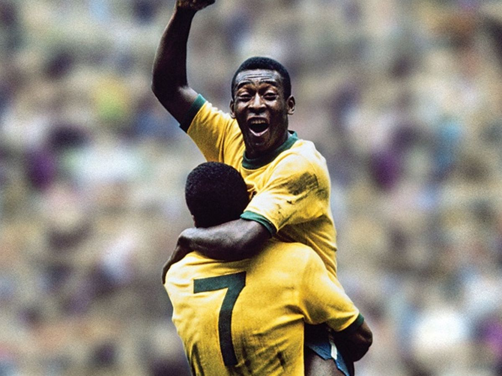

Introduction

Soccer is the most popular sport in the world. Billions of people tune in to watch their favorite teams and players compete against each other for trophies. There is a constant debate among fans over which player is the best of all time. These fans support players based on the player's goalscoring, his ability to control the game, or the flashy skills he uses to entertain the fans.
There are many players that are regarded as some of the best, such as Pele, Diego Maradona, Ronaldinho, or Ronaldo, but two names stand out above the rest: Lionel Messi and Cristiano Ronaldo.
Other notable players:

Pele:
Known for his goalscoring ability, he once held a number of the records that Messi and Ronaldo broke and now hold.
Diego Maradona:
Maradona was an excellent dribbler and ball controller. He was also the last player to win a World Cup for Argentina, a feat that Messi almost matched when he led them to the 2014 World Cup final that they lost against Germany.
Ronaldinho:
One of the flashiest players of the game, Ronaldinho had skills that made every defender he faced fear him.
Ronaldo Nazario:
Ronaldo was a promising striker who was on his way to being the greatest of all time before a series of knee injuries stunted his growth.